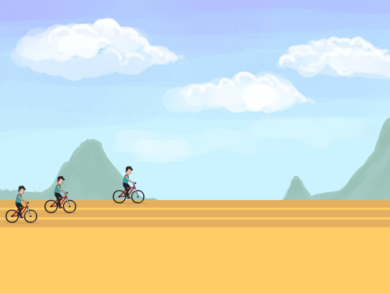
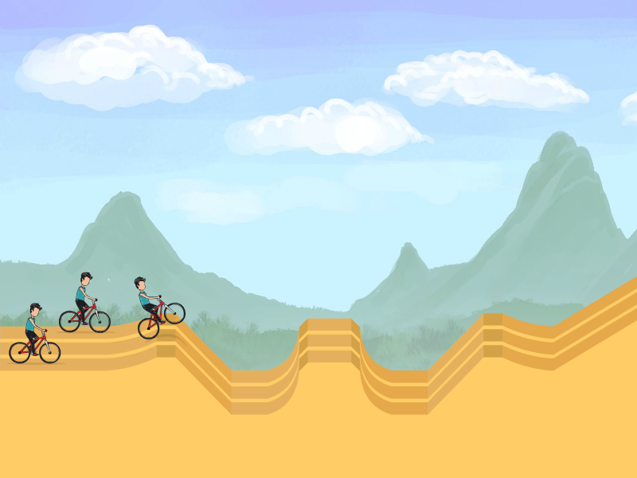
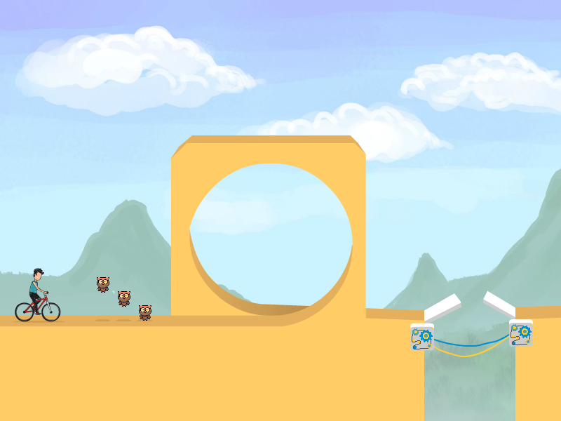
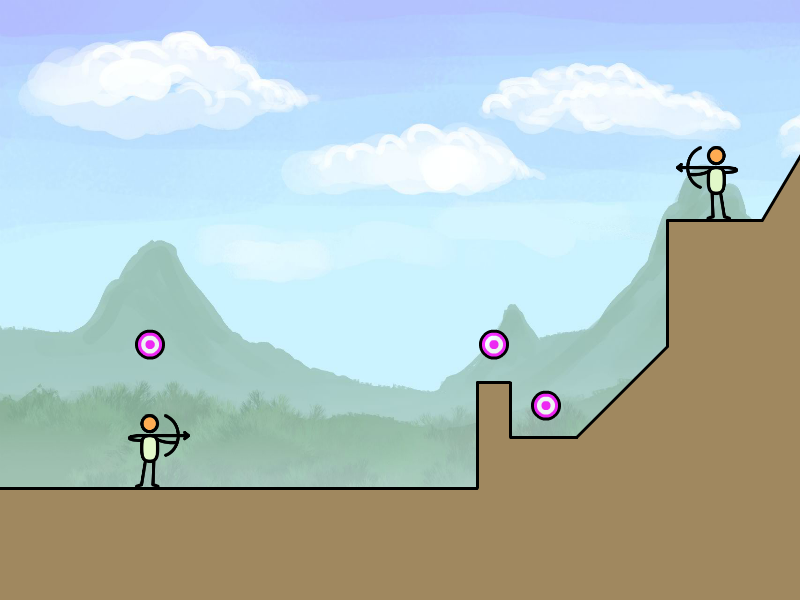
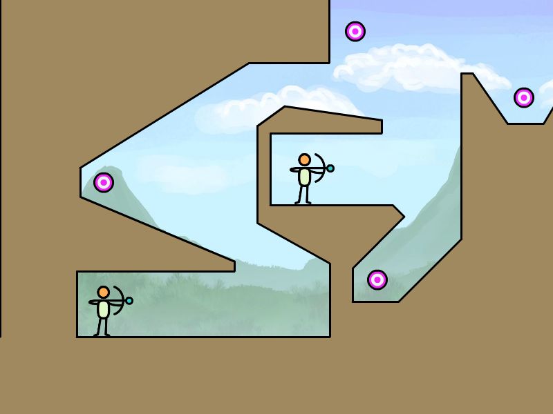
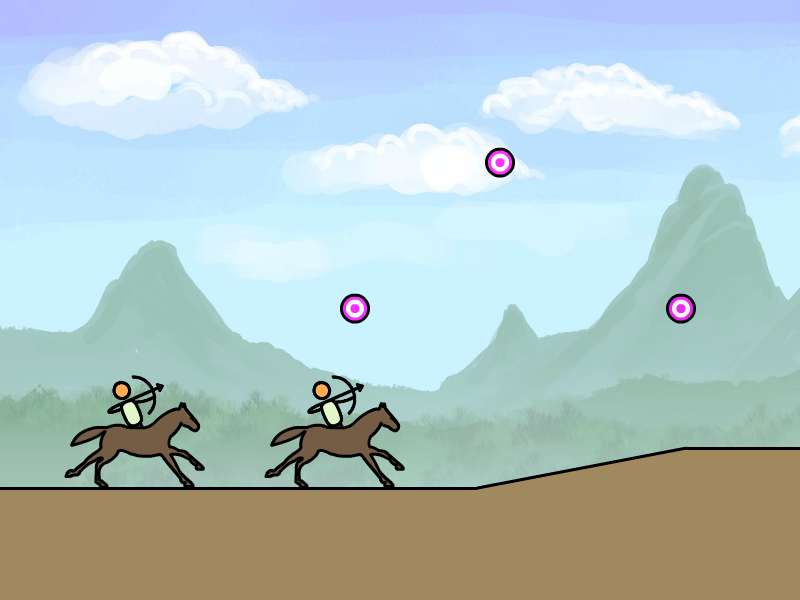
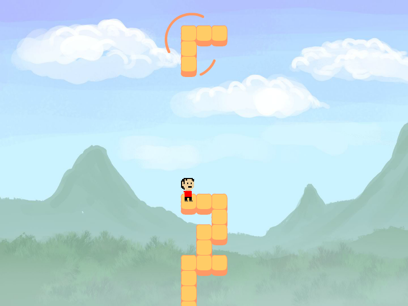
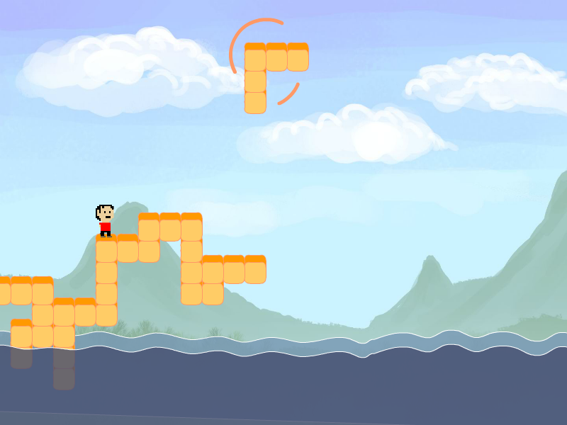
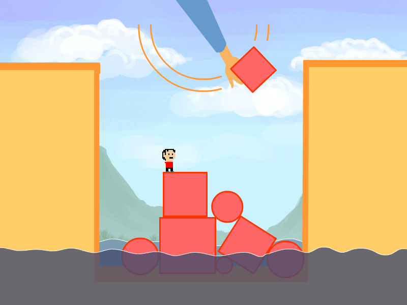
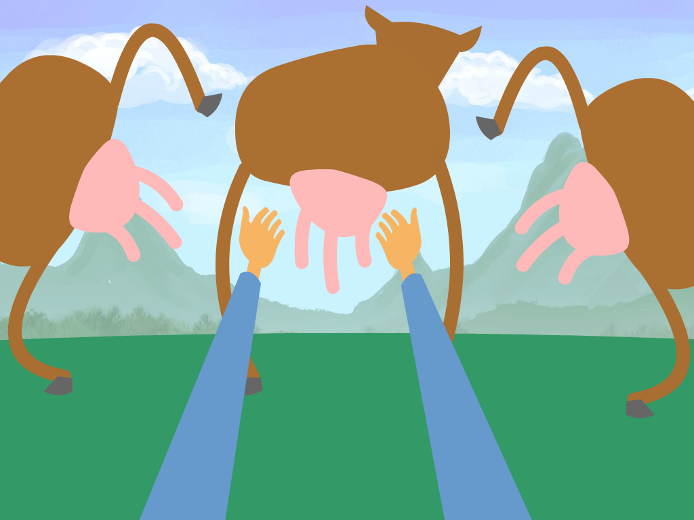

The Problem
Impairment of Movement
Users present with a range of impairments:
- range
- coordination
- strength
Demonstrated through a range of motions:
- pronation/supanation
- holding arm up for an extended period
- wrist flexion, extension
- wrist rotation
- grip
- extend fingers
Impairment of Cognition
Users present with a range of impairments:
- Reaction time
- short term memory (N back, 2N back)
- long term memory (Shopping list task)
- spatial memory + simple attention (Path test, matching card test)
- alerting, orienting, executive function (complex attention - ANT, alerts, distractions)
- set shift (rule learning/ adapting to changing rules)
Practical Problems
Use of the solution is currently limited by:
- Limited availability of therapists
- Short therapy sessions (4 minutes)
- Expensive alternatives
- Lame alternatives
Ideal Scenario
Gripable would ideally facilitate:
- Independent sessions
- Self-motivated sessions
- Therapist-supported sessions
- Group or cooperative sessions
- 45 minute sessions
- Repetitive movement
- Trackable
- Reportable
- Cooperative and competitive
Proposed Approach
Development of "Micro-games" in order to:
- Validate game is playable with a variety of impairments
- Validate game is useful with a variety of impairments
- Validate game is fun
The Perfect Project
A "Micro-game" that:
- Is quick to make
- Is replayable
- Super flexible for development and testing
- Easy to test with a variety of variations
- Can be expanded later on
Game Concepts
Scoot Squad

Cyclists race on a straight track. Who can pump faster?

Cyclists race over terrain, managing speed and angle.

Cyclists race over terrain by timing their acceleration and speed to pass obstacles.
Premise
Users power a range of land-based vehicles with their Gripable.
Different game types can be adapted to meet a wide range of physical and cognitive abilities.
Easiest
- Squeeze only
- User squeezes (or pumps) to accelerate, release to slow down
- User optimizes path by controlling speed over jumps and bumps
A little harder
- As above BUT...
- As bike picks up speed, it tends to pop up on to it's back wheel
- User balances speed and rotation through controlling throttle
Even harder
- Squeeze and tilt
- User squeezes to accelerate, release to slow down
- Bumps and jumps create angular velocity that users must counter with device rotation
Most complicated
- As above BUT...
- User can trigger backflips and front flips (or more) with quick angular movements
Why is this good?
- Highly flexible control system
- Highly flexible game framework
- Easy to design a range of levels
- Easy to generate infinite levels for replayability
- Easy to support multiple players competitively
Why is this bad?
- Not very original (actually, maybe that's a good thing)
- No obvious capacity for cooperative play
- Even the most basic gameplay may be too challenging
References & Inspiration
The Bowmen

Archers shoot targets (or each other) in a geometric terrain.

Archers shoot targets with bouncing arrows.

Archers shoot targets on an infinitely scrolling landscape.
Premise
Users control an archer shooting a range of stationary and moving targets.
Different game types can be adapted to meet a wide range of physical and cognitive abilities.
Easiest
- Targets appear or move in various locations
- Archer Bow has auto-angle and auto-velocity
- Users squeeze to draw bow and relax to fire arrow
- User may be standing still OR on horseback
A little harder
- As above BUT...
- The strength of the squeeze determines the velocity of the arrow
Even harder
- As above BUT...
- The angle of the Gripable determines the angle of the bow
Most complicated
- As above BUT...
- User's arrow bounces
- Targets are arranged to require bouncing arrows
Why is this good?
- Highly flexible control system
- Highly flexible game framework
- Easy to design a range of levels
- Easy to generate infinite levels for replayability
- Easy to support multiple players competitively and cooperatively
Why is this bad?
- Not very original. Except maybe the horseback version. That would be super bad-ass actually.
References & Inspiration
Bridge Brothers

Assembling a navigable bridge with orthographic projection

Assembling a sinking bridge with 2D phsyics

Throwing a range of shapes in to a pit to help your comrade escape
Premise
One player (Builder) controls blocks they use to contruct a bridge for a second player (Runner) to navigate.
Easiest
- Block auto-rotates every 0.5 seconds. Builder squeezes to drop block.
- Runner auto-navigates. Runner squeezes to move/jump along bridge (if possible).
A little harder
- As above BUT...
- Builder can rotate blocks by twisting Gripable
- Runner can choose avatar direction/angle by twisting gripable
Variations
- Blocks may stack tetris style OR pile on top of each other with 2D physics
- Runner may navigate with top-down controls OR sidescrolling 2D physics
- Runner may be attempting to traverse gaps with a bridge OR climb out of a pit by mounting a pile
Why is this good?
- It's somewhat original/unique
- It offers unique and interchangeable roles to players
- It offers a deeper cooperative element than most multiplayer scenarios
- It is somewhat flexible and expandable
- Can be infinite and hence have replayability
Why is this bad?
- The most basic gameplay may be a little tricky
- It requires a certain level of skill to be any fun
- It's not terribly flexible
- May have limited replayability
References & Inspiration
Udder Hero

Milking the gymnastic cows
Premise
Users use the unique Gripable interface to simulate milking a cow.
Easiest
- Squeezing milks an udder
- Users try and drain a cow as quickly as they can
A little harder
- As above BUT...
- Cows appear at different angles
- User must twist the gripable to align to different udders
2 hands?
- As above BUT...
- Player has a Gripable in BOTH hands for maximised milkage
With friends
- As above BUT...
- Each player grapples to do the most milking OR
- All players work together to be thorough milking cohorts
Why is this good?
- It's hilarious
- It offers fantastic affordance with the gripable hardware
- It would be a joy to play
- It would be very unique to Gripable
Why is this bad?
- It's kinda weird
- Not very flexible
- Difficult to imagine much replayability
References & Inspiration
- This one game straight from my head. Probably something to do with the Kernich family farm and my dad's childhood stories.